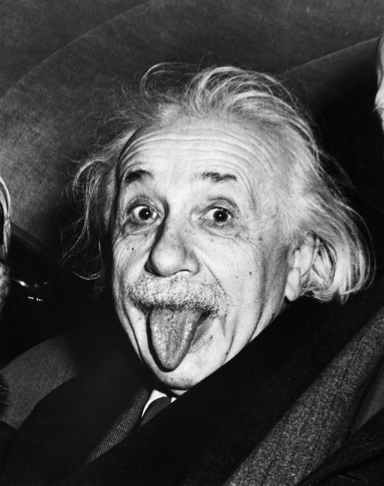

The word physics was derived from the Latin word physica meaning natural thing. It deals with the fundamental constituents of the universe, the force they exert on one another, and the results produced by these forces.
Physics can also be described as the study of the properties of matter, energy and their mutual relationship. It is the branch of science which deals with the properties of matter and emery and relationship between them.
The scope of physics is very wide and vast, it deals with not only the tinniest particles of atoms but also dwells upon natural phenomenon like galaxy, milky way, solar and lunar eclipse etc. Its laws can be applied in our everyday life like measuring the speed of a moving car or better, the current prevailing professions knowledge in the subject. Examples are: Engineering, Operational research, medicine, computing and an endless list of careers.
Gravity Sir Isaac Newton discovered gravity in the 1600’s after an apple fell on his head. Gravity itself is a central force on the earth, it is the thing that keeps us all in place and stops us from floating around. It is defined as the force between two particles in a universe that causes attraction. It is all over the universe an is essential in holding planets and stars together.
Sir Isaac Newton discovered gravity in the 1600’s after an apple fell on his head. Gravity itself is a central force on the earth, it is the thing that keeps us all in place and stops us from floating around. It is defined as the force between two particles in a universe that causes attraction. It is all over the universe an is essential in holding planets and stars together.
The Higgs Boson Particle The Higgs Boson particle is an essential part of what is known as the standard model in physics. This is because it signals the existence of the Higgs field, an invisible energy field that is present throughout the entire universe. It imbues other particles with mass. It is also known as the God particle because they give mass to the building blocks of the universe. Without the Higgs Boson, nothing would exist.
The Higgs Boson particle is an essential part of what is known as the standard model in physics. This is because it signals the existence of the Higgs field, an invisible energy field that is present throughout the entire universe. It imbues other particles with mass. It is also known as the God particle because they give mass to the building blocks of the universe. Without the Higgs Boson, nothing would exist.
Theory of relativity

The theory of relativity was created by Albert Einstein in the early 1900’s and published in 1916. It states that the speed of light is the same for all those who are looking at it, even those moving differently to each other. It can be separated into two sections: general and special relativity. General relativity is more mathematically challenging of the two and explains that what we perceive as the force of gravity actually arises from the curvature in space and time. The central idea here is that space and time are two different aspects of ‘spacetime’. Spacetime curves when there is gravity, matter, energy and momentum. Special relativity is in many ways the bedrock upon which all modern physics theories are built
- Science is valued by society because the application of scientific knowledge helps satisfy many basic needs and improve living standards. Similarly, science is often justified to the public as driving economic growth, which is seen as a return on investment for public funding. During the past few decades, however, another goal of science has emerged: “to find a way of rationally using natural resources to guarantee their continuity and the continuity of humanity itself; an endeavor that is currently referred to as sustainability.
- Scientific success is today linked to personal health and longer life expectancy, technological advancement, economic growth to sustainability. This has made the subject secure funding and gain social acceptance.There are many applications of the principles of physics to physiology, health and the practice of medicine. Many of the greatest inventions in modern medicine were developed by physicists who imported technologies like X-rays, nuclear magnetic resonance, ultrasound, particle accelerators and radioisotopes tagging and detection techniques into the medical domain.
- These contributions have revolutionized medical techniques for imaging the human body and treating diseases